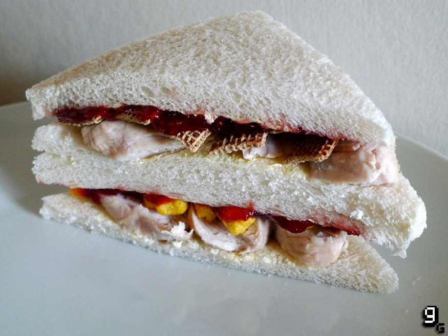

Sinner's Sandwich

Description
This wholesome sandwich comes from a little
diner in GreenVale, a real treat an far from shy
on it's flavor profile.
"Self afflicting punishment to atone for past sins"
FM
Ingredients
- Sandwich Bread
- Turkey
- Strawberry Jam
- Cereal
- Mayonaise
Steps
- You can either toast the bread or not
depending on your preference.
- Warm the turkey on a pan.
- Place mayo on both pieces of bread.
- Place a generous amount of strawberry jam
on one piece of bread.
- Place cereal on top of the strawberry jam.
- Place the turkey on the other piece of bread.
- Add salt and pepper if needed.
- Close the sandwich and enjoy!
Go back